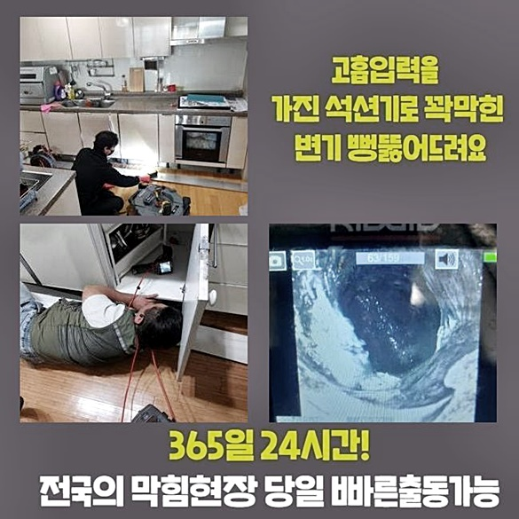
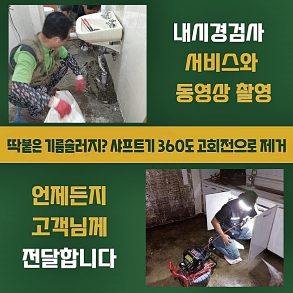
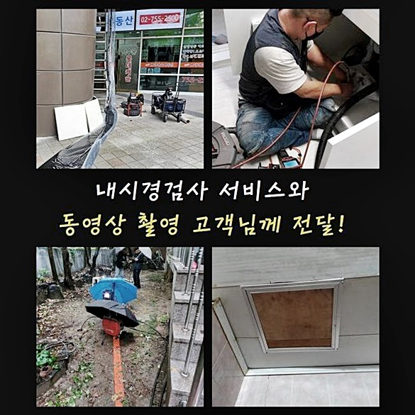
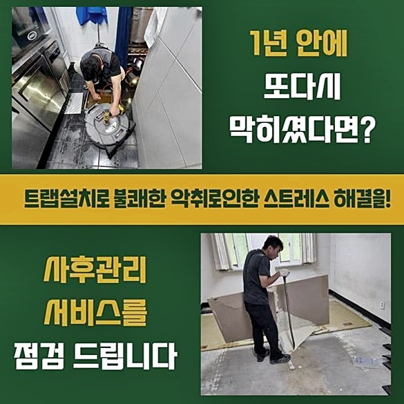
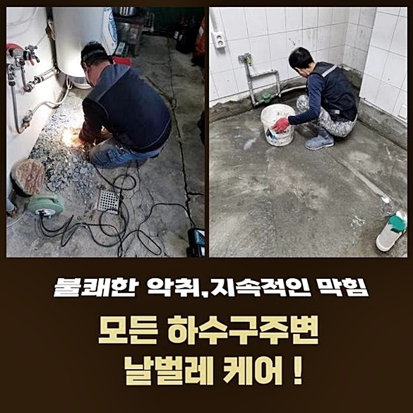
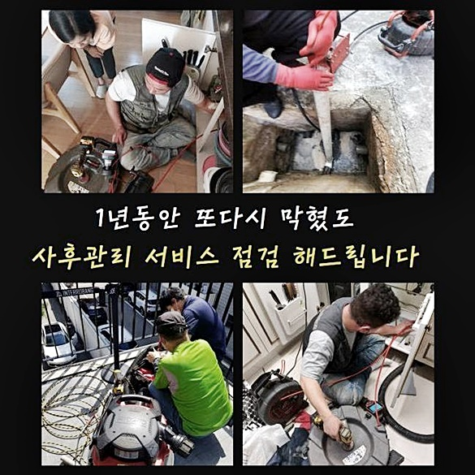

🏠 동작구 흑석동대변기뚫음 신대방동 하수관고압세척 설비업체
용인시 처인구 배관막힘 전문 시공 후기

📋 작업 개요
- 위치: 용인시 처인구, 수원시 영통구, 화성시 동탄
- 서비스 유형: 배관막힘, 하수구청소, 고압세척, 내시경점검
- 작업 일시:
- 업체명: 하수구수사대 (010-5615-2118)
🔍 문제 상황
좋은하루입니다
하수파이프 막힘의 장소에 항상 마음놓고 달려가는 배관문제 해결사입니다
이전에 고객분이 다목적공간 하수관로에 고장이 생겼다고 전화를 주셨기에 작업장에 찾아갔는데요
동작구 흑석동대변기뚫음 신대방동 하수관고압세척 설비업체
물빠짐이 전혀 되지 않더니 불쾌한냄새까지 올라와 황급히 저희 전문가에게 연락을 주셨습니다
저희 팀은 관련 작업장에 방문해서 배수가 안되는 장애의 근원을 파악하고 철저하게 처리해 드렸습니다
어떤 단계를 거쳐 물길 막힘의 원인들을 발견해 고치게 되었는지 함께 살펴보며 안내해드릴게요
혹시나 똑같은 상태에 마주하게되면 놀라지말고 오늘 다뤘던 자료를 참고하면 도움이 되실거예요
저희 수리업체가 방문한 현장은 주거지역으로 고객님 가구의 다용도 공간에 세탁기 배수관이 막힘상태라고 알려주셨는데요
의뢰인의 설명을 듣고 상태를 체크해보니 고약한 냄새가 나면서 오수까지 역류하는 상태였죠
해결하기 전에 근본적인 이유를 알아내려고 배수관 악취를 어느 순간부터 맡기 시작했는지 세세히 질문드렸습니다

🔎 원인 분석
💡 전문가 진단: 정밀 진단 장비를 사용하여 슬러지의 고착 여부를 판명하고 타격/세척 작업을 실시했습니다.
의뢰인은 확실한건 아니지만 약 4주 전부터 물 배출이 느려지는 기분이었다고 희미하게나마 기억하고 있는대로 이야기했어요
하수배관 막힘이 생긴다면 대부분 급작스럽게 일이 벌어졌다고 판단하시겠지만 실제로는 이렇듯이 사전 징후가 있어요
그런데 이상황을 별다른 문제라 생각하지 않으면서 무시하고 지나쳐 최종적으로는 이처럼 물이 빠지지 않는 현상들까지 발생하게 된거예요
물을 소비하는 장소의 경우 배수구에서 올라오는 악취가 아니어도 세면볼이나 주방싱크등 악취가 퍼질 수 있게 되죠
역한 냄새가 올라온다는 것 이는 바로 배수구 안쪽에서 오염물이 부패하고 있다는 의미라고 여기시면 장애가 생겼다는 걸 쉽게 떠올릴 수 있어요
문제공간에 방문해 하수관에 물을 부었더니 고객께서 언급하신것과 같이 하수와 비누거품들이 거꾸로 솟아나오면서 지독한냄새도 퍼졌어요
이런식으로 하수배관 역한냄새가 발생하면 안쪽 불순물을 없애는 조치들이 요구되어 제일 첫단계로 석션기구로 첫번째 청소 작업을 수행했습니다
석션기구는 보통 가정에서 이용중인 깊숙한 위치에 더러운 물질 청소는 쉽지 않지만 앞쪽에 위치한 더러운 물질을 제거하는 것은 문제 없었습니다
저희 수리업체는 어떤 현장이든 아무렇게나 다수의 과정을 추진하지 않고 차근차근 작업하며 쓸데없는 절차를 줄입니다
하수도 내시경 장치를 넣을 수 있지만 막힘이 크지 않다면 흡입장비로 대다수의 문제가 해소되기 때문이죠
저희 베테랑이 작업장에 찾아간후에 어떤 수단으로 막힘이슈를 처리하느냐가 결과적으로 이용자의 비용으로 계산되다보니 신중해야합니다
저희 팀은 어느 장소든 요인을 정확하게 밝혀내고 해결하는 동안에 의뢰인의 지출 부분까지 염두해서 쓸데없는 수리를 실시하지 않습니다

🔧 작업 과정
첫째로 석션기구를 사용해 배관안의 더러운 물질을 끄집어내는 작업들을 시행하고나니 돌멩이같은 불순물들이 드러났습니다
더러운 물질을 검토해보니 배수구 악취를 야기하는 다른 찌꺼기인 기름덩어리가 안쪽에 있다는 것을 파악할 수 있었어요
그러므로 배수구 내시경장비를 통해 막고있는 찌꺼기가 어느부분에 어느정도 쌓여있는 상태인지 낱낱이 조사하기로했습니다
배수관 내시경장치는 얇고 긴 튜브 끝쪽에 카메라장비와 라이트가 하나의 세트로 붙어있으며 다른 끝에는 모니터가 있습니다
어두컴컴하고 기다란 배수관 내부의 상태를 바로 점검할 수 있어 원인을 밝혀 철저하게 해결 가능 하도록 지원하는 장치에요
하수구 안에 삽입한 결과 불순물 덩어리들이 눈에 띄었고 모래와 유사한 것들도 관찰되었어요
저희 팀이 방문했던 작업장은 하수구 내부 깊이 문제를 일으키는 오염물은 배수관 청소장치가 진입하기 힘들어
긴 튜브를 덧대어 연결한 다음 작업을 수행하거나 샤프트 기구를 이용하여 부수고 씻어내는 조치를 해요
저희 베테랑은 이처럼 실무 노하우들이 풍부해 문제를 파악해내는 데 막힘이 없고 원인을 밝혀도 최적의 방식들로 제거 가능하기 때문에 의뢰자분의 우려를 개운하게 해결해 드립니다
이렇게 방식이 정해지게 되면 즉시 배수관 속을 닦아내며 더러운 물질을 처리해 하수파이프 나쁜냄새가 올라와서 불편을 주는 막힘 문제들을 해결해요
기본 작업 후 끝내는 것이 아닌 다회 되풀이하여 시도한 후 하수가 원활히 배수되는지 물 배출 검사로 체크하고
다시 하수관 내시경 기기를 투입해 살펴보면서 남은 오염물은 없는지 철저하게 닦아졌는지 체크해 봅니다
저희 팀이 다녀온 작업장은 수차례 장애상황을 야기하는 것들을 확인하여 완벽하게 깨끗함이 파악되면 작업을 종료하게 됩니다
배관에서 꺼낸 이물질들이 이처럼 많아서 역겨운 냄새가 퍼지고 잔여물이 모이게 되며 역류 역시 발생하게 되었습니다
간간이 주방싱크와 이어진 배수파이프의 경우 조리하면서 생기게 된 지방질이 배수구에 점차 들러 붙으면서 기름덩이 또는 음식 잔여물이 관찰되기도 하죠
이러한 경우에는 하수관 구조가 세탁기와 주방싱크대의 하수관이 이어진 상태라서 부엌 싱크에서 배출된 하수가 세탁실의 하수배관으로 넘쳐나오는 일이 나타나기도 합니다
이러한 사안은 고난도의 상황이기 때문에 저희 베테랑처럼 전문적인 업체만 해결할 수 있는 상태라서 불쾌한 냄새가 하수구에서 올라오면서 물이 흐르는 것이 순조롭지 않다고 여겨진다면 위에서 검토한 예시처럼 역류현상이 시작되기 전 징조인 것을 알아두시기 바랍니다
배수장애가 나타나기 전 전문업체에 점검을 의뢰하시면 예방 작업이 가능한 사항을 참고해주시면 도움이 되실 것 같습니다


✅ 작업 완료
도착하기전에도 유선연락을 통해 도움을 드리며 방문하고 나서도 꼼꼼한 점검을 한 후 의뢰인댁에 적합한 개별 맞춤 해결책을 선보이고 있습니다
정확한 방식으로 배수문제를 풀어보시기를 권유드립니다 부적절한 작업 방법을 통해 가정내에서 문제해결을 시도하시곤 하는데
도리어 사태를 심각하게 만드는 경우가 흔한일이기에 저희 베테랑에게 재상담을 종종 주시고 있습니다
가정집에서 해결이 된다면 괜찮지만 악화되는 사태를 막으려면 가장먼저 상담을 받아 보는 것이 지혜로운 선택이에요
전화 상담은 항상 운영중이니 필요할땐 전화주시고 어려움을 풀어내시길 바랍니다



⚠️ 하수구 배관 막힘 예방 및 관리 가이드
- ✅ 머리카락, 비닐, 물티슈 등 물에 분해되지 않는 이물질은 절대 흘려보내지 마세요.
- ✅ 기름기 많은 식기는 설거지 전 키친타올로 먼저 기름때를 닦아내세요.
- ✅ 주기적으로 배수구에 뜨거운 물을 가득 부어주어 유지방 고착을 방지하세요.
- ✅ 작업 후 1년 이내 재발 시 무상 A/S 보증 서비스를 제공합니다.
💡 핵심 정리
- 확실한 장비 작업(내시경 점검 및 샤프트 스케일링)으로 원인을 뿌리 뽑습니다.
- 작업 후 1년 이내에 동일한 부위 재발 시 100% 무상 A/S 서비스를 보장합니다.
- 서울 · 경기 · 인천 전 지역에 24시간 언제든 긴급 출동할 수 있도록 항시 대기 중입니다.
❓ 자주 묻는 질문 (FAQ)
🚨 용인시 처인구 배관막힘 문제로 고민이신가요?
정확한 원인 진단과 확실한 시공으로 재발 없는 해결을 약속드립니다.
24시간 긴급 출동 | 서울 · 경기 · 인천 전지역 | 1년 내 재발 시 무상 A/S